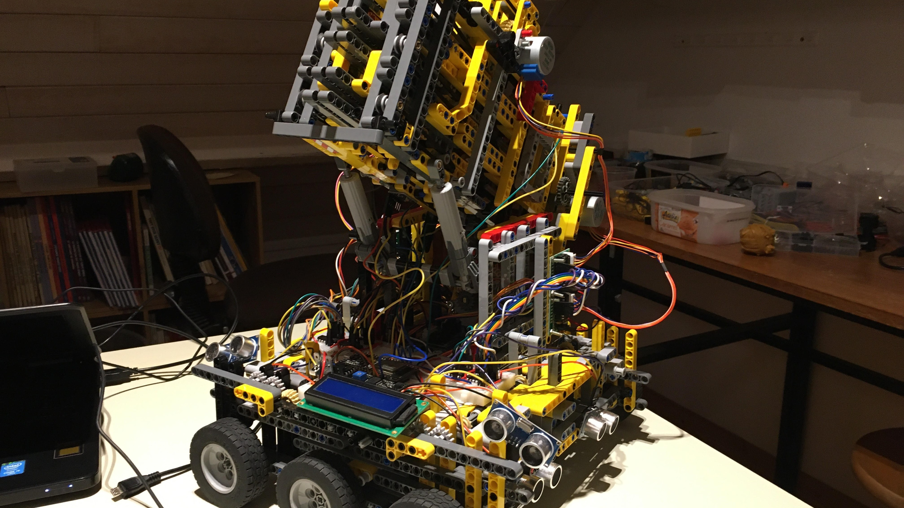

Introduction
Prototype V is the next evolution of prototype IV. The goal here is to explain to you how I automated the robot so that
it could dart automatically. I used several strategies and like always I had to experience some failures before it finally
“worked”.
First we will see how I add all the sensors on the robot so that the robot can be “intelligent”. Next we will talk about my first strategy. The essence here is that I generated the numbers based on previous shots. A bit like how machine learning works. I then tried to use a python script and build my own sort of intelligent software. But I quickly gave it over because I don’t have the knowledge therefore and because I got conflicts between the arduino and the python code. I finally changed my arduino code so that I could interrupt a specific distance and angle that the robot has to follow. I then use my knowledge and some excel spreadsheet to calculate the next shot based on the previous one (same as the first idea but way better implemented). Of course during all these tests I runned into some problems with the hardware and the legos. Therefore I will discuss some problems and talk about some solutions for it. Maybe I will then apply these solutions into the next prototype. Hope you will find it interesting.
The next pages about this project talks about the statistics behind the robot. Is my robot really better than a human?

First we will see how I add all the sensors on the robot so that the robot can be “intelligent”. Next we will talk about my first strategy. The essence here is that I generated the numbers based on previous shots. A bit like how machine learning works. I then tried to use a python script and build my own sort of intelligent software. But I quickly gave it over because I don’t have the knowledge therefore and because I got conflicts between the arduino and the python code. I finally changed my arduino code so that I could interrupt a specific distance and angle that the robot has to follow. I then use my knowledge and some excel spreadsheet to calculate the next shot based on the previous one (same as the first idea but way better implemented). Of course during all these tests I runned into some problems with the hardware and the legos. Therefore I will discuss some problems and talk about some solutions for it. Maybe I will then apply these solutions into the next prototype. Hope you will find it interesting.
The next pages about this project talks about the statistics behind the robot. Is my robot really better than a human?
Quick recap of prototype IV
In prototype IV I could control all motors of the robot. Of course they all had to be controlled manually.
Which means that by pressing on a button of the infrared controller, I could yes or no let this motor turn.
There are some big inconveniences with this approach. The first thing is that there are no sensors to precisely
know the angle and distance the robot has. The second thing is that you, as a user of the robot, have to find out
which motor you have to turn now and in which direction. To resume, my robot was blind and stupid.
Adding the sensors
First thing I have to do is to set some eyes on my robot. Therefore we will use some HC-SR04 ultrasonic
sensors and the mpu6050 accelerometer and gyroscope.
The following link will guide you to a video about the ultrasonic sensor. It is good and will teach you the basics as well as the advanced libraries that I will use for my robot. https://www.youtube.com/watch?v=6F1B_N6LuKw
For the robot I decided to use 4 ultrasonic sensors. 2 on the front size and 2 on the left size. Placing 2 ultrasonic sensors on the same side seems like stupid because they will both normaly give the same value. But actually it will help me check if one of the 2 sensors is broken or not. Because both sensors are placed parallel to each other, we can compare them to see if the robot is placed perpendicular to the board or not. If both distances are the same, then there is no problem and the robot is perpendicular to the board. If the distance is different then the sensors are broken or the robot is not perpendicular to the board.
One ultrasonic sensor needs 2 “data” pins. Which means that I will need 8 pins on the esp32 to control all the
ultrasonic sensors. This number is way too much. The first solution is to use a shift register like I did for
the motors. It is possible, but it’s really complex because everything has to be really time-precise. The solution
I used was to use the ping library. With it you can control the infrared sensor just by using one pin. This means
that I now only need 4 pins on the esp32 instead of 8. The ping library also includes some other interesting
features, like making multiple measures and taking the average of it automatically.
The next thing I did was to add a sensor that could calculate the tilt-angle of the cannon for me. I could have used the SCA60C or the SW-520D but I decided to use the mpu6050 gyroscope and accelerometer sensor because it uses I2C which means no more pins needed. The mpu6050 can be really useful in other projects that I want to do later like building a drone, plane or anything also that can move in 3 dimensions. You can find a full tutorial about the mpu6050 sensor here. I decided to use the same library and code architecture as in the video. https://www.youtube.com/watch?v=XCyRXMvVSCw
Now having all these datas is great but I need to show them in a way or another to start working with them. The easiest solution would be to send these data like everything else to the serial monitor. This is easy but once more comes with some problems. The first problem is that sending data over the serial monitor happens quite slowly. This could interfere in the motor proces which is never a good idea when you use stepper motors (because the 4 coils have to alternate a lot of time per second to turn the axis, if there is then a little delay, this could stop the motors from turning). The other problem using the serial monitor is that a computer is always needed and that the data can’t be displayed in a good, user-friendly interface unless you use an external python, java or C program.
So for quite a month, I tried to code a python script that could take the data of the serial monitor, display it in a cool GUI (graphical user interface) using KIVY or any other library and then control the robot using this program. Now like you can imagine this was a bit too complex. I runned into some python arduino conflicts that I can't really explain.
For now I decided to use a simple lcd screen that will give me the basic information like in which status the robot is now loaded, the distance in front, the distance left and the tilt-angle of the robot.
Now a classic lcd screen (2x16) needs six pins to run, which I don’t have on the esp32. I solved this problem by using an lcd adapter. With it, I can control the LCD screen using I2C.
I2C stands for inter-integrated circuit and is really popular among electronic circuits because a lot of data can be transferred from one microcontroller to another one using only 2 wires (SDA and SCL).

The following link will guide you to a video about the ultrasonic sensor. It is good and will teach you the basics as well as the advanced libraries that I will use for my robot. https://www.youtube.com/watch?v=6F1B_N6LuKw
For the robot I decided to use 4 ultrasonic sensors. 2 on the front size and 2 on the left size. Placing 2 ultrasonic sensors on the same side seems like stupid because they will both normaly give the same value. But actually it will help me check if one of the 2 sensors is broken or not. Because both sensors are placed parallel to each other, we can compare them to see if the robot is placed perpendicular to the board or not. If both distances are the same, then there is no problem and the robot is perpendicular to the board. If the distance is different then the sensors are broken or the robot is not perpendicular to the board.
The next thing I did was to add a sensor that could calculate the tilt-angle of the cannon for me. I could have used the SCA60C or the SW-520D but I decided to use the mpu6050 gyroscope and accelerometer sensor because it uses I2C which means no more pins needed. The mpu6050 can be really useful in other projects that I want to do later like building a drone, plane or anything also that can move in 3 dimensions. You can find a full tutorial about the mpu6050 sensor here. I decided to use the same library and code architecture as in the video. https://www.youtube.com/watch?v=XCyRXMvVSCw
Now having all these datas is great but I need to show them in a way or another to start working with them. The easiest solution would be to send these data like everything else to the serial monitor. This is easy but once more comes with some problems. The first problem is that sending data over the serial monitor happens quite slowly. This could interfere in the motor proces which is never a good idea when you use stepper motors (because the 4 coils have to alternate a lot of time per second to turn the axis, if there is then a little delay, this could stop the motors from turning). The other problem using the serial monitor is that a computer is always needed and that the data can’t be displayed in a good, user-friendly interface unless you use an external python, java or C program.
So for quite a month, I tried to code a python script that could take the data of the serial monitor, display it in a cool GUI (graphical user interface) using KIVY or any other library and then control the robot using this program. Now like you can imagine this was a bit too complex. I runned into some python arduino conflicts that I can't really explain.
For now I decided to use a simple lcd screen that will give me the basic information like in which status the robot is now loaded, the distance in front, the distance left and the tilt-angle of the robot.
Now a classic lcd screen (2x16) needs six pins to run, which I don’t have on the esp32. I solved this problem by using an lcd adapter. With it, I can control the LCD screen using I2C.
I2C stands for inter-integrated circuit and is really popular among electronic circuits because a lot of data can be transferred from one microcontroller to another one using only 2 wires (SDA and SCL).
Automating the robot
I now know the angle and distance of the robot. It should be possible now to make a little algorithme to automate
the shots.
So first thing first I have to automate the loading mechanism.
To automate it I decided to divide the loading mechanism in 4 steps. The first one is to pull on the string until it comes behind the trigger level. Now this is easy to say because we can easily see where this is, but how can we automate it? I firstly thought I could do it just by saying to the motors that they need to turn for let’s say 30 seconds. Now the problem with interrupts is that everything has to happen as expected to work. If anything goes wrong, like something prevents the pouch from moving or the motors don’t have enough power to move it, then bad things can happen. Second idea was to put a led inside the pouch and place a light sensor when it needs to stop. If I then see a peak in the light sensor, then I know the led just passed. This works theoretically great but therefore you need a lot of hardware and so wires. And placing wires to things that can move is never a goed idee. Using light sensors like photoresistors is great but the environment can change (night & day) which will make it hard to code it well without creating errors and miscalculations.
We know the best solution is the easiest one that does the job. Now if we look at our problem the easiest solution would be to set buttons that the pouch will press on one it is in the right place. There are three cannons so I had to include 3 buttons. The code for it can be seen in the chargePartOne() function. (code can be seen on github)
Now the second loading step was to pull down the trigger. This had to be done with sensors and like for step 1 I decided to use a simple push button. The code can be seen in chargePartTwo().
Now the thierth step is to unspin the first motors so the pouch can move freely once the trigger goes up. Because nothing is actually moving (you can just see that the cord is unspinning) it is hard to add sensors to check when something is done or not. To automate it I decided to place an interrupt. For the next X seconds the motors will spin down the cord. The robot is now charged. This part of the code can be found in the chargePartThree() function.
The next thing to do for the robot is to move into the right place before shouting. But before we can do that we have to say where we want the robot to shoot. This was quite complicated and will therefore be discussed in the following chapter.
So first thing first I have to automate the loading mechanism.
To automate it I decided to divide the loading mechanism in 4 steps. The first one is to pull on the string until it comes behind the trigger level. Now this is easy to say because we can easily see where this is, but how can we automate it? I firstly thought I could do it just by saying to the motors that they need to turn for let’s say 30 seconds. Now the problem with interrupts is that everything has to happen as expected to work. If anything goes wrong, like something prevents the pouch from moving or the motors don’t have enough power to move it, then bad things can happen. Second idea was to put a led inside the pouch and place a light sensor when it needs to stop. If I then see a peak in the light sensor, then I know the led just passed. This works theoretically great but therefore you need a lot of hardware and so wires. And placing wires to things that can move is never a goed idee. Using light sensors like photoresistors is great but the environment can change (night & day) which will make it hard to code it well without creating errors and miscalculations.
We know the best solution is the easiest one that does the job. Now if we look at our problem the easiest solution would be to set buttons that the pouch will press on one it is in the right place. There are three cannons so I had to include 3 buttons. The code for it can be seen in the chargePartOne() function. (code can be seen on github)
Now the second loading step was to pull down the trigger. This had to be done with sensors and like for step 1 I decided to use a simple push button. The code can be seen in chargePartTwo().
Now the thierth step is to unspin the first motors so the pouch can move freely once the trigger goes up. Because nothing is actually moving (you can just see that the cord is unspinning) it is hard to add sensors to check when something is done or not. To automate it I decided to place an interrupt. For the next X seconds the motors will spin down the cord. The robot is now charged. This part of the code can be found in the chargePartThree() function.
The next thing to do for the robot is to move into the right place before shouting. But before we can do that we have to say where we want the robot to shoot. This was quite complicated and will therefore be discussed in the following chapter.
Automating the shooting part
One thing I forgot to mention is that all the canons aren’t the same. This is due to the fact that the
elastics used are not exactly the same. This could also be caused by the more or less friction between the
darts and the cannon. This means that we can’t generalize the distance and angle for the three cannons. For
example, if I want to shoot on the 20 with the first and second cannon, I will have to use different angles
and distances.
Now my first strategy to automate the moving part of the robot was to use a 20x2 array for each cannon (So, there will be 3 arrays). The index corresponds to the target. The first row are the distances needed to shoot on the target, the second row are the angles.
The thing is now to find the right values to put in the arrays. Therefore I had to shoot a bunch of times with
different distances and angles. Every time a target is hit, I will note it inside this spreadsheet. If we do
this for example, 500 times, normally we should find the specific values that correspond to the target.
One more time, this wasn’t the right strategy to use. First thing is that you need a lot of time to do all the shots. If something goes wrong, like if the reference points change, then you will have to start over again. One other thing is that these values are specific for this distance left, in front and for the angle used. If I want to shoot the next time not from 2,73m but from 3m all my values will be wrong and so useless.
Because our targets are quite large, multiple distances and angles can be used to shoot on the same target. Which means multiple values can be used in our array. The easiest solution would be to use the average of all these values. Now because the shots won’t be perfectly homogeneous, this isn’t a good idea. We can agree on the fact that the best place to shoot on a target is to shoot in the yellow points. There, the distance to other targets is the maximum which means errors are more likely to be avoided. Now imagine we just shooted on the green dots. If we take the average of these points, you can see that the chance to make errors are more likely to happen (my robot is not so precise). Even if all our shots are perfectly homogeneous like in target 16, then the average of these points will be the triple zone (red dot) in the target which means it won’t be the right target anymore.
So after several hours of shooting, I decided to change my strategy. I decided that the big brain won’t be the arduino anymore, but myself. I will generate the distance and angle the arduino has to follow by entering the values myself. This has many advantages, first you can generate all combinations that exist which was not possible in the first strategy. The second thing is that you don’t have to shut down and pull the arduino out of the robot to generate a new combination. This was also a huge problem before because I lost quite a lot of time uploading new sketches. (This is also better for the environment)
Like always I wanted to do something too complex. My idea was to build an app where everything would be included, from the entering of the angle and distance of the robot, to the settings and the history of every shot and result that had been done. I even thought I could code a little machine learning algorithm that would generate the perfect angle and distance needed to shoot in the target. All the communication between the smartphone and the esp32 would happen using bluetooth and not just by cable.
I worked for more then 2 weeks on this app but I didn’t have enough time to finish it. This doesn’t mean the app will never be finished. For now the app is just postponed. But still, I needed a system to generate a distance and angle for the robot. I went back to the basics and decided to use the infrared controller. Everyone who has ever watched tv knows that sometimes the controller doesn’t do what you ask him to do. Sometimes you have to press the button several times before it actually reacts. Sometimes you press one time on the button and two values are sended. If you don’t point the controller directly to the box then you can send other values than expected. This is frustrating and is the reason why I don’t want to send the values directly, which means if the robot has to move 33 centimeters to the left, I don’t want to send 2 threes. This will generate some bugs. The solution I will use will only use 5 buttons on the controller (the arrows and OK buttons). The upper arrow will add one tenth to the distance needed while the lower arrow will subtract one tenth to the distance. For the units it’s the same but using the right and left arrow. Once you finish calibrating the distance, you press on OK to end this process. I use the same process for the angle only then I divide the result by ten. In code this gives us :
I can now generate the angle and distance as I want. To start the shouting mechanism, I decided to use the same logic as above. I have to enter the OK button to exit the while loop which will start the motor and move the trigger upwards.
One interesting thing about my strategy is that the robot actually isn’t playing fully autonomously. But because the robot loads, moves and shoots autonomously, I will still say it’s working automatically. Now one other thing I can say is that the robot actually never misses his target. If he’s shouting wrong then it’s only because the distance and angle weren’t the good ones. Which means you didn’t play well. Which also means that you’re actually still playing darts. Which means, using my robot isn’t cheating at all!
The entire code can be seen in github using the following link :
https://github.com/getgetstechno/darts-robot/blob/main/MK10/MK10.ino
Now my first strategy to automate the moving part of the robot was to use a 20x2 array for each cannon (So, there will be 3 arrays). The index corresponds to the target. The first row are the distances needed to shoot on the target, the second row are the angles.
One more time, this wasn’t the right strategy to use. First thing is that you need a lot of time to do all the shots. If something goes wrong, like if the reference points change, then you will have to start over again. One other thing is that these values are specific for this distance left, in front and for the angle used. If I want to shoot the next time not from 2,73m but from 3m all my values will be wrong and so useless.
Because our targets are quite large, multiple distances and angles can be used to shoot on the same target. Which means multiple values can be used in our array. The easiest solution would be to use the average of all these values. Now because the shots won’t be perfectly homogeneous, this isn’t a good idea. We can agree on the fact that the best place to shoot on a target is to shoot in the yellow points. There, the distance to other targets is the maximum which means errors are more likely to be avoided. Now imagine we just shooted on the green dots. If we take the average of these points, you can see that the chance to make errors are more likely to happen (my robot is not so precise). Even if all our shots are perfectly homogeneous like in target 16, then the average of these points will be the triple zone (red dot) in the target which means it won’t be the right target anymore.
So after several hours of shooting, I decided to change my strategy. I decided that the big brain won’t be the arduino anymore, but myself. I will generate the distance and angle the arduino has to follow by entering the values myself. This has many advantages, first you can generate all combinations that exist which was not possible in the first strategy. The second thing is that you don’t have to shut down and pull the arduino out of the robot to generate a new combination. This was also a huge problem before because I lost quite a lot of time uploading new sketches. (This is also better for the environment)
Like always I wanted to do something too complex. My idea was to build an app where everything would be included, from the entering of the angle and distance of the robot, to the settings and the history of every shot and result that had been done. I even thought I could code a little machine learning algorithm that would generate the perfect angle and distance needed to shoot in the target. All the communication between the smartphone and the esp32 would happen using bluetooth and not just by cable.
I worked for more then 2 weeks on this app but I didn’t have enough time to finish it. This doesn’t mean the app will never be finished. For now the app is just postponed. But still, I needed a system to generate a distance and angle for the robot. I went back to the basics and decided to use the infrared controller. Everyone who has ever watched tv knows that sometimes the controller doesn’t do what you ask him to do. Sometimes you have to press the button several times before it actually reacts. Sometimes you press one time on the button and two values are sended. If you don’t point the controller directly to the box then you can send other values than expected. This is frustrating and is the reason why I don’t want to send the values directly, which means if the robot has to move 33 centimeters to the left, I don’t want to send 2 threes. This will generate some bugs. The solution I will use will only use 5 buttons on the controller (the arrows and OK buttons). The upper arrow will add one tenth to the distance needed while the lower arrow will subtract one tenth to the distance. For the units it’s the same but using the right and left arrow. Once you finish calibrating the distance, you press on OK to end this process. I use the same process for the angle only then I divide the result by ten. In code this gives us :
I can now generate the angle and distance as I want. To start the shouting mechanism, I decided to use the same logic as above. I have to enter the OK button to exit the while loop which will start the motor and move the trigger upwards.
One interesting thing about my strategy is that the robot actually isn’t playing fully autonomously. But because the robot loads, moves and shoots autonomously, I will still say it’s working automatically. Now one other thing I can say is that the robot actually never misses his target. If he’s shouting wrong then it’s only because the distance and angle weren’t the good ones. Which means you didn’t play well. Which also means that you’re actually still playing darts. Which means, using my robot isn’t cheating at all!
The entire code can be seen in github using the following link :
https://github.com/getgetstechno/darts-robot/blob/main/MK10/MK10.ino
Some of the encountered problems
The robot was now working fine. The next thing I had to do was to see if the robot can answer the research
question I questioned myself in page 1. The biggest question I wanted to answer was to know if the robot was
better than me or not. If it is, then I can say that the project is a success.
While I did some tests, I encountered some new problems. The first one is that the robot while moving right and left can also rotate a bit on itself. This means that the robot isn’t placed perpendicular to the board anymore.
How is this now possible? Well first it’s important to know that my wheels can’t turn on themselves. They should normally always move in a straight line. But apparently they don’t. My robot can in that way be compared to a little car toy for kids. Let’s take the basic lego car. The wheels here don’t turn too, but by setting a different pressure on the wheels, we can still rotate the car. With my robot, the same phenomena appear. The difference in pressure is due to the center of gravity that is not placed exactly in the center of the vehicle but more on the backside. One other thing is that the robot is connected to the ground with 2 cables (power source for the motor and for the esp32). These all exerts even more pressure on the back wheels which amplify the phenomena.
The solution I used was to extend the wheels. This means that the 4 external wheels are placed even further from the center of gravity. This will make it harder to rotate the robot for the same distance traveled. Problem fixed (for now).
One other problem and subject I didn’t talk about was the moving part of the robot. Once the robot has distance and angle, how do he know how much he has to move? That’s the main reason why I added the ultrasonic sensors and the mpu6050. We will illustrate the principle using the left distance moving part.
The first thing it does is to compare if the difference between the actual distance and the distance that he needs to get is positive or negative. If the distance is negative then he turns in one direction otherwise in the other. Now this works fine but if you want the robot to be completely precise, you have to make the smallest move possible but that takes more time too. So all the trick is to find the right balance between precision and duration. Now you can’t tell the robot to move exactly to this distance. This will never work because every time you’re detecting a new value, he will be a little bit different then the last one (even if the robot doesn’t move). This means that the robot will always move and never end the while() section.
So you have to use intervals. This can easily be done by adding and subtracting a general offset from the value. The interval will then look like this [distance - generalOffset, distance + generalOffset]. Now the trick is to find the right generalOffset. A huge one will make sure the robot is rapidly in position but not so precise while a small one will be precise but will take some time to move in the right position. (if the offset is small then the robot will move multiple times over and over the interval, depends on the steps the robot makes.)
I firstly thought the best thing to do was to find the good offset and then you just have to include and voila, it’s done. Now this can be done in a smarter way. Let’s say that the robot has to move for 20 centimeters. If the robot knows it, then he can do at least 17 centimeters without stopping and looking again at the distance. This will save some time, and the robot will look at level smarter with it.
How can we do that? We can make a relation where the steps depend on the distance needed to move. This is pretty easy and can be found in the following code part.
Here you have all the information that led to my automated darts robot. You probably want to see it working, well here it is.
A future thing that I could include is a temperature and humidity sensor because the distance calculated from
the ultrasonic sensor depends on these parameters. Other than that I still have some bugs concerning the gyroscope
and ultrasonic sensors. All this will be fixed in the following article : MKVI.
While I did some tests, I encountered some new problems. The first one is that the robot while moving right and left can also rotate a bit on itself. This means that the robot isn’t placed perpendicular to the board anymore.
How is this now possible? Well first it’s important to know that my wheels can’t turn on themselves. They should normally always move in a straight line. But apparently they don’t. My robot can in that way be compared to a little car toy for kids. Let’s take the basic lego car. The wheels here don’t turn too, but by setting a different pressure on the wheels, we can still rotate the car. With my robot, the same phenomena appear. The difference in pressure is due to the center of gravity that is not placed exactly in the center of the vehicle but more on the backside. One other thing is that the robot is connected to the ground with 2 cables (power source for the motor and for the esp32). These all exerts even more pressure on the back wheels which amplify the phenomena.
The solution I used was to extend the wheels. This means that the 4 external wheels are placed even further from the center of gravity. This will make it harder to rotate the robot for the same distance traveled. Problem fixed (for now).
One other problem and subject I didn’t talk about was the moving part of the robot. Once the robot has distance and angle, how do he know how much he has to move? That’s the main reason why I added the ultrasonic sensors and the mpu6050. We will illustrate the principle using the left distance moving part.
The first thing it does is to compare if the difference between the actual distance and the distance that he needs to get is positive or negative. If the distance is negative then he turns in one direction otherwise in the other. Now this works fine but if you want the robot to be completely precise, you have to make the smallest move possible but that takes more time too. So all the trick is to find the right balance between precision and duration. Now you can’t tell the robot to move exactly to this distance. This will never work because every time you’re detecting a new value, he will be a little bit different then the last one (even if the robot doesn’t move). This means that the robot will always move and never end the while() section.
So you have to use intervals. This can easily be done by adding and subtracting a general offset from the value. The interval will then look like this [distance - generalOffset, distance + generalOffset]. Now the trick is to find the right generalOffset. A huge one will make sure the robot is rapidly in position but not so precise while a small one will be precise but will take some time to move in the right position. (if the offset is small then the robot will move multiple times over and over the interval, depends on the steps the robot makes.)
I firstly thought the best thing to do was to find the good offset and then you just have to include and voila, it’s done. Now this can be done in a smarter way. Let’s say that the robot has to move for 20 centimeters. If the robot knows it, then he can do at least 17 centimeters without stopping and looking again at the distance. This will save some time, and the robot will look at level smarter with it.
How can we do that? We can make a relation where the steps depend on the distance needed to move. This is pretty easy and can be found in the following code part.
Here you have all the information that led to my automated darts robot. You probably want to see it working, well here it is.